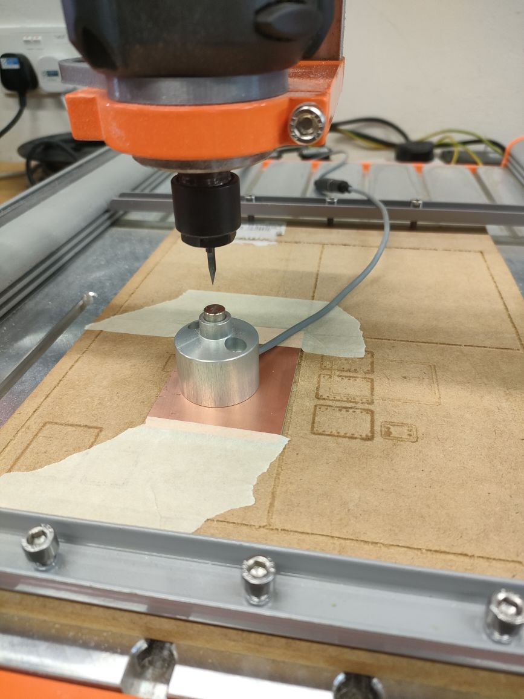
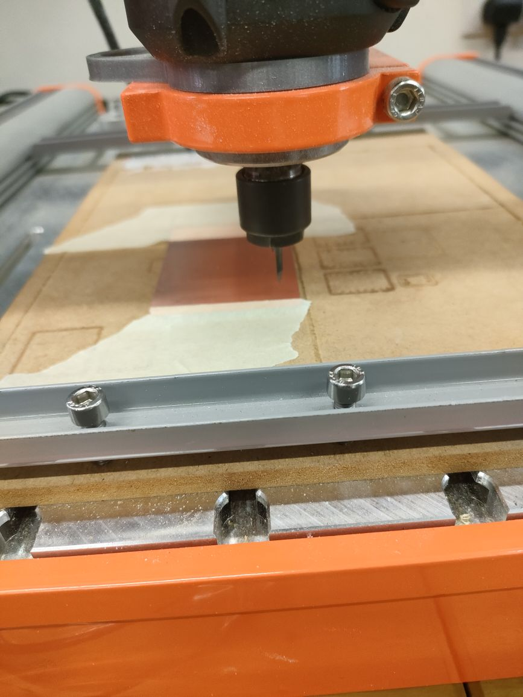

Customized electronics to meet product requirements
Customized footprint for product
Greater reliability
Ability to prototype & iterate faster
Better product integration
The machine that we are using is called the Stepcraft 420
1)We need to put double sided tap at the base of the board so that it will stick to the surface and not move around
2)Than we have to choose which position we want to place it in and than put masking tape at both end
3)Put the tool in and lock it but not too tight
4)Set the Z axis
4)Set the X & Y axis
